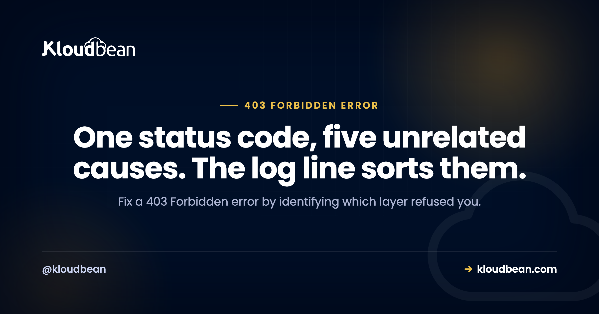

403 Forbidden Error: Which of the Five 403s You Actually Have

403 Forbidden means the server understood exactly what you asked for and is refusing to serve it. Not confused, not broken, refusing. The difficulty is that at least five completely different mechanisms all return 403: filesystem permissions, a missing directory index, an explicit deny rule, an application or security layer blocking you, and a storage bucket policy. They share a status code and nothing else. Fixing the wrong one is why people spend an hour on file permissions when a security plugin was blocking their address the whole time.
Read your web server error log first, because it names the mechanism. nginx says directory index ... is forbidden for a missing index file, access forbidden by rule for an explicit deny, and Permission denied for filesystem permissions. Those three lines point at three unrelated fixes. If the log shows nothing, the refusal came from your application, a security plugin, a firewall rule, or a storage bucket policy rather than from the web server. And do not use chmod 777, which is both a security problem and often not even a working fix.
First, 403 is not 401
These get mixed up constantly and the distinction saves time. A 401 means the server does not know who you are and wants credentials. A 403 means the question of identity is settled and the answer is still no. So if you are getting 403 on a page you expect to access, adding credentials will not help. Something has decided that this request, from this source, to this resource, is not allowed.
Find out which layer refused you
Two commands. The first shows you who answered:
curl -I https://example.com/the-forbidden-pathRead the Server header and any provider-specific headers. A 403 from nginx, from a CDN, and from object storage look different, and object storage in particular usually returns a recognisable XML body rather than an HTML page. Fetch the body if the headers are ambiguous:
curl -s https://example.com/the-forbidden-path | head -20The second command is the one that actually solves it:
sudo tail -50 /var/log/nginx/error.log
# or, on Apache
sudo tail -50 /var/log/apache2/error.lognginx is admirably specific here, and its three messages map to three separate causes:
| Log line | Cause | Fix |
|---|---|---|
directory index of "/var/www/html/" is forbidden | No index file, and directory listing is off | Add the index file or fix the root path |
access forbidden by rule | An explicit deny in your configuration | Find and correct the deny block |
open() ... failed (13: Permission denied) | Filesystem permissions or ownership | Correct modes and ownership, check parent directories |
| Nothing at all in the log | The refusal came from above or inside the app | Check the app, security plugin, WAF, or bucket policy |
That last row matters more than it looks. An empty error log is information: it means nginx was happy to serve the request and something else said no. Stop looking at file permissions at that point.
403 number one: filesystem permissions
The web server process cannot read the file. Correct values are boring and specific: directories 755, files 644, and configuration files holding credentials tighter than that.
# Correct permissions across a web root
sudo find /var/www/html -type d -exec chmod 755 {} \;
sudo find /var/www/html -type f -exec chmod 644 {} \;
sudo chown -R www-data:www-data /var/www/html
# Tighter on anything holding credentials
sudo chmod 640 /var/www/html/wp-config.phpTwo things people miss. Ownership matters as much as the mode, because a perfectly permissioned file owned by the wrong user still fails when the web server writes rather than reads. And every parent directory needs execute permission, since traversing a path requires it at each level. A correct file inside a directory the web server cannot enter produces exactly this error, which is why the fix sometimes seems not to work: you fixed the file and not the path to it.
# Check the whole path, not just the file
namei -l /var/www/html/wp-content/uploads/2026/07/image.jpgnamei -l is genuinely the fastest way to see this. It prints permissions for every component of the path, and the broken level is immediately visible.
Why 777 is not the answer
It is the most repeated advice on this error and it is bad on two counts. It makes files writable by every user on the server, which on any shared or multi-tenant system is a real exposure rather than a theoretical one. And it frequently does not even work, because some server configurations deliberately refuse to execute scripts with group or world write permission. So you take a security hit and keep the error.
If 755 and 644 with correct ownership do not fix it, the cause is not the mode. Look at ownership, at parent directories, and on RHEL-family systems at SELinux contexts.
403 number two: no index file
You requested a directory, the server has no index file to serve, and directory listing is off, which is the correct default. The log line names it plainly. Either the index file is genuinely missing, or your document root points somewhere unexpected, which is common after a deploy that changed the build output directory.
# Where does the server think the root is?
grep -r "root " /etc/nginx/sites-enabled/
# Is there actually an index file there?
ls -la /var/www/html/ | headResist the urge to switch directory listing on to make the error go away. That replaces a 403 with a public file browser, which is worse.
403 number three: a deny rule you forgot about
Somebody wrote an allow list. It might have been you, months ago, protecting a staging site or an admin path. Then the office IP changed, or the site moved behind a proxy so every request now arrives from the proxy's address instead of visitors' addresses.
# Find deny and allow directives
sudo grep -rE "^\s*(deny|allow)" /etc/nginx/
# On Apache, also check .htaccess files
sudo find /var/www -name ".htaccess" -exec grep -lE "Deny|Require" {} \;The proxy case deserves emphasis because it is a reliable trap. Once traffic is proxied, an allow list written against real visitor addresses no longer matches anything, since the web server only sees the proxy. Restore the real client address before you write access rules, or you are filtering on the wrong thing entirely. Our error 521 guide covers that configuration in detail, because the same misunderstanding causes a different outage there.
Also worth checking whether the 403 is deliberate. If you have an IP allow list or a basic authentication gate on a staging or internal application, a 403 is the control working. That is a five second check that occasionally saves an afternoon.
403 number four: WordPress and security layers
Very common, and the tell is that the web server log is clean. Candidates, roughly in order:
A corrupted .htaccess. On Apache, rename it and let WordPress rebuild it:
mv .htaccess .htaccess.bakThen visit Settings, then Permalinks in the admin and save, which regenerates a clean file. If the 403 disappears the moment you rename it, you have your answer.
A security plugin blocking your address. Firewall and login-protection plugins block addresses after failed logins, and they are not always obvious about it. If you can reach the site from a phone on mobile data but not from your office, this is almost certainly what is happening. Deactivate the plugin over SSH to confirm:
wp plugin list --status=active
wp plugin deactivate the-security-pluginA web application firewall rule. If a request contains something that pattern-matches an attack, a WAF may refuse it. The classic false positive is a legitimate post containing SQL keywords or code samples, which gets blocked on save while every other page works fine. The signature is that one specific action fails and everything else is normal.
Hotlink or referrer protection. Images returning 403 when embedded elsewhere but loading fine directly is hotlink protection doing its job, whether or not you remember enabling it.
403 number five: storage buckets and signed URLs
Object storage refuses by default, which is the correct design and a frequent surprise. If files return 403 from a bucket, work through four things: whether the object is private while the request is anonymous, whether a bucket-level policy blocks public access, whether the access key has permission for this specific object path, and whether a signed URL has simply expired.
That last one produces a distinctive pattern worth recognising. A link works, then stops working later with a 403, and nothing changed. Presigned URLs are time-limited on purpose. If your application generates them for downloads, the expiry needs to be longer than the time a user might reasonably take, and links should not be cached or emailed as though permanent.
On Kloudbean, S3-compatible buckets have explicit public and private access controls in the dashboard, so the common case of "I meant this to be public" is a setting rather than a policy document. More on that in S3-compatible object storage.
The specific case of "your client does not have permission to get URL"
This wording comes from Google's own frontend rather than from your server, so if you are seeing it, the refusal happened at a Google-hosted endpoint. In practice it shows up when a request reaches a Google service without the authorisation that service expects: an API called with credentials that do not cover it, referrer or key restrictions that do not match where the request came from, or an application whose access is limited to particular accounts.
The useful takeaway is that nothing on your own web server will change it. Check the credentials, the key restrictions, and the access settings on the Google side. Debugging your own file permissions for this message is time spent in the wrong place, which is exactly why recognising whose 403 you are looking at is the whole point of this article.
| Pattern | Which 403 | First check |
|---|---|---|
| Whole site, right after a deploy or migration | Permissions or document root | Error log, then namei -l |
| One directory only | Missing index file | ls that directory |
| Works on mobile data, fails from the office | Address-based block | Security plugin, deny rules |
| Only when saving a specific post or form | WAF false positive | Firewall or WAF logs |
Only /wp-admin | Security plugin or .htaccess | Rename .htaccess, then plugins |
| Images fail when embedded elsewhere | Hotlink protection | Referrer rules |
| Link worked yesterday, 403 today | Expired signed URL | Presigned URL expiry |
| Everything fine, log completely clean | Above or inside the app | CDN, WAF, bucket, app logic |
Where hosting removes the whole first category
Two of the five 403s exist purely because someone had to set permissions and a document root by hand. Those are the ones that show up right after a migration, when files arrive owned by the wrong user, and they are entirely avoidable.
On Kloudbean, applications are provisioned with correct ownership and permissions rather than left for you to work out, and free migration assistance exists specifically because a hand-copied site is where wrong ownership comes from. Where a 403 is something you actually want, the platform gives you the deliberate versions: IP access control with allow and deny rules including CIDR ranges, and a basic authentication gate for staging or internal applications. S3-compatible buckets have public and private controls in the same dashboard.
Honest boundary: nothing here prevents a security plugin from blocking your own address, and no platform can tell a WAF that your blog post about SQL injection is not SQL injection. What it removes is the permissions-and-ownership class, which is the largest and the most tedious.

403 Forbidden Error, in more depth
If the refusal is a legal one rather than a permission one, that has its own code and its own rules: 451 Unavailable For Legal Reasons, which exists because 403 was judged unsuitable for the legal case. For the neighbouring status codes, 502 Bad Gateway, 503 after a deploy, and 504 Gateway Timeout. When a proxy sits in front, Cloudflare error codes and error 521, which covers restoring real visitor addresses. On WordPress specifics, the critical error message, the WP-CLI guide, and secure WordPress hosting. For bucket permissions, S3-compatible object storage. And for headers that interact with access control, the security headers guide.
Read the log, fix it, ship again.
Build logs stream live in the console, deployment history keeps what happened, and the logs viewer separates app errors from web requests, so a failed start is a five-minute read rather than a guessing game.
- ✓ Live build logs
- ✓ Deployment history
- ✓ Logs viewer
- ✓ Managed process restarts
- ✓ Automatic backups
- ✓ Git deploy
Plans from $8/mo · Free migration assistance · Free trial
FAQ
What does 403 Forbidden mean?
It means the server understood your request and is refusing to fulfil it. Unlike a 404, the resource exists; unlike a 401, the server is not asking for credentials. Something has decided this request is not permitted, and at least five separate mechanisms can make that decision, which is why the fix depends entirely on identifying which one refused you.
What is the difference between 401 and 403?
A 401 means you are not authenticated and the server wants credentials. A 403 means authentication is not the issue: you may be perfectly well identified and still not allowed. Practically, if you are seeing 403, logging in or adding an API key usually will not help, because permission rather than identity is what is being refused.
How do I fix a 403 error on my website?
Start with the web server error log. nginx distinguishes a missing directory index, an explicit deny rule, and a filesystem permission failure with three different messages, and each has a different fix. If the log is empty, the refusal came from your application, a security plugin, a firewall, or a storage bucket policy rather than the web server.
What file permissions should I use to fix a 403?
Directories 755, files 644, and anything holding credentials tighter at 640 or 600. Also check ownership, and check that every parent directory has execute permission, since traversing a path requires it at each level. namei -l on the full file path shows you exactly which level is wrong.
Should I use chmod 777 to fix a 403 error?
No. It makes files writable by every user on the server, which is a genuine exposure on any shared system, and it often does not even resolve the error because some configurations refuse to execute scripts that are group or world writable. If correct modes and ownership do not fix it, the cause is elsewhere: parent directories, ownership, or SELinux contexts.
Why do I get a 403 error only on wp-admin?
Usually a security plugin blocking your address after failed logins, or a corrupted .htaccess file. Test from mobile data rather than your usual network, since a different result confirms an address-based block. Otherwise rename .htaccess and re-save your permalinks so WordPress regenerates a clean one.
Why did a working link start returning 403?
If it points at object storage, the most likely answer is an expired signed URL, since presigned links are time-limited by design. Otherwise consider whether an address-based block was triggered, a bucket policy changed, or a firewall rule was added. A link that worked and then stopped without any deployment usually points at an expiry or a block rather than a permissions change.
Can a firewall or WAF cause a 403?
Yes, and it produces a distinctive pattern: one specific action fails while the rest of the site works normally. A common false positive is saving content that contains code samples or SQL keywords, which a rule reads as an attack. Check the firewall or WAF logs for a blocked request matching the timestamp before changing anything on the server.